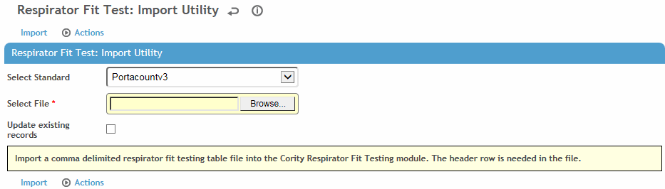

The detailed respirator fit test results can be imported as an electronic file from test devices (contact your Cority representative for a list of supported devices). Before transferring test results, the type of equipment must be defined in the Equipment module (see Equipment) and in the system settings, (see Changing Your System Settings).
In the Safety (or IH) menu click Respirator Fit.
On the Respirator Fit Tests list, choose Actions»Import Results.

Select the Standard you are importing from. Depending on your choice, you may be prompted to enter the first date of the records you are importing, or select the date format, then retrieve the test file to be imported.
Test dates in the import file must use the format MM/DD/YYYY, or the import will be rejected. In Cority, the date for an imported test will be displayed using the format selected in the user's “Short Date Style” system setting (if configured).
An exception is the OHDQuantifit standard, which must use DD/MM/YYYY.
Indicate if you want to update existing records.
Click Import to add the test results to the employees’ records.
To view the list of test results, including these rejected records, choose Actions»Process Status and Log. For each rejected record, the Process Log will display a reason for rejection.
Rejected records as a result of incorrect data in the import file can be corrected directly in Cority. Once corrected, choose Actions»Re-process. View the log again to be sure all records have been saved.